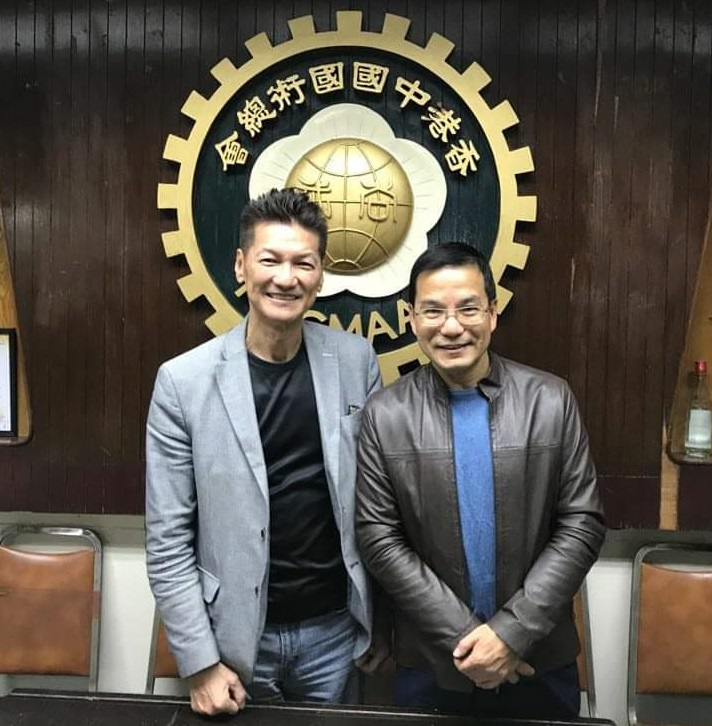
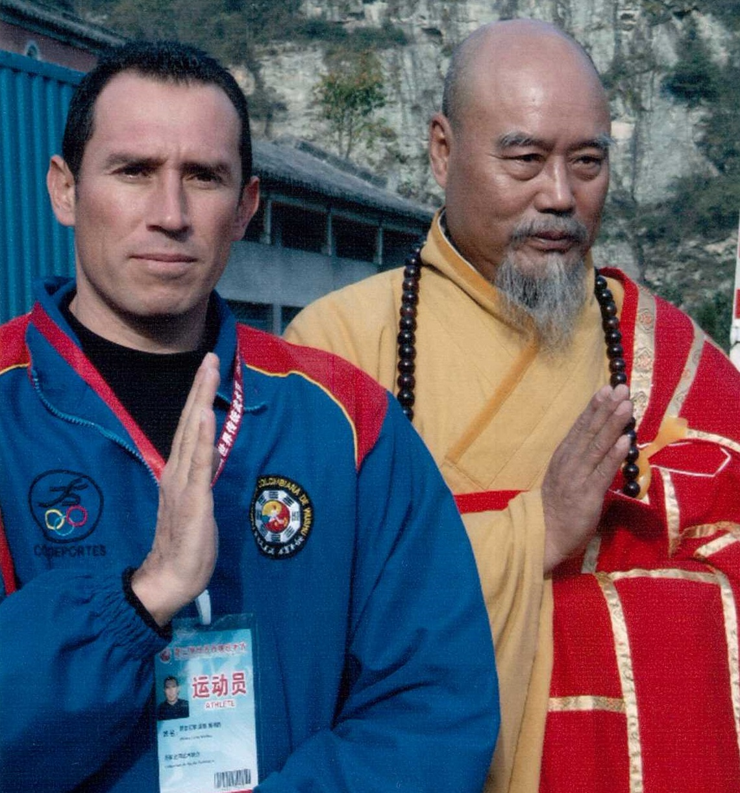
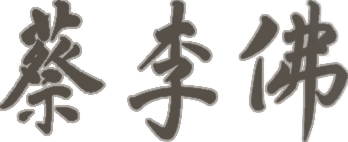
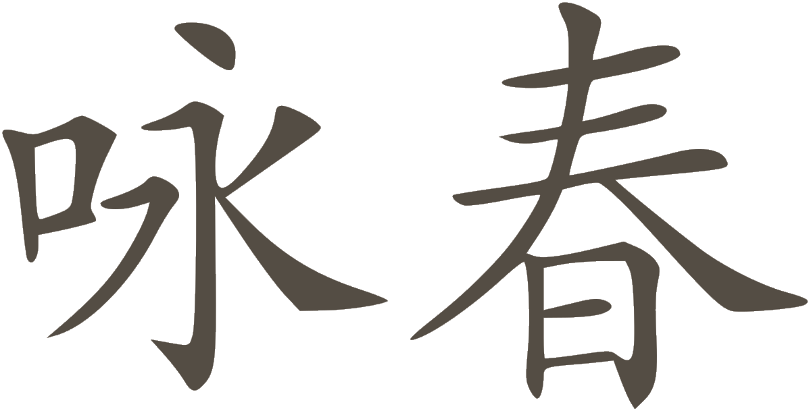
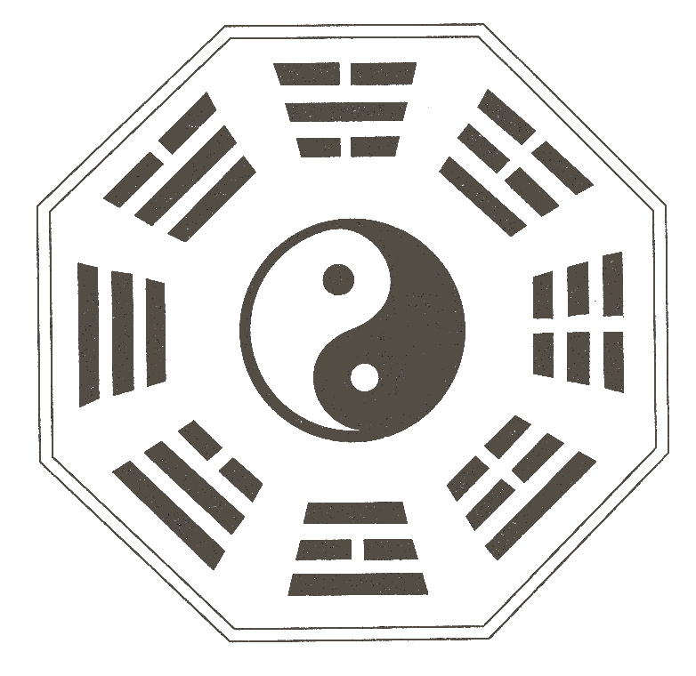
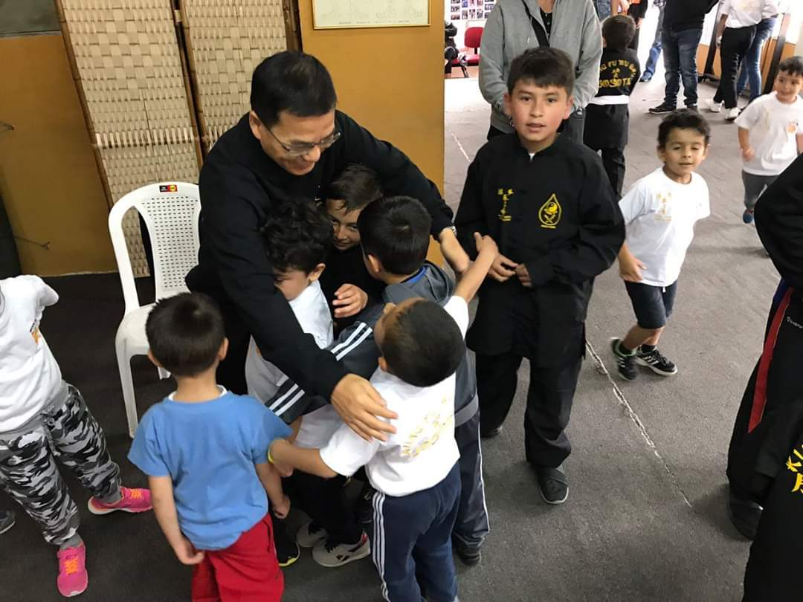
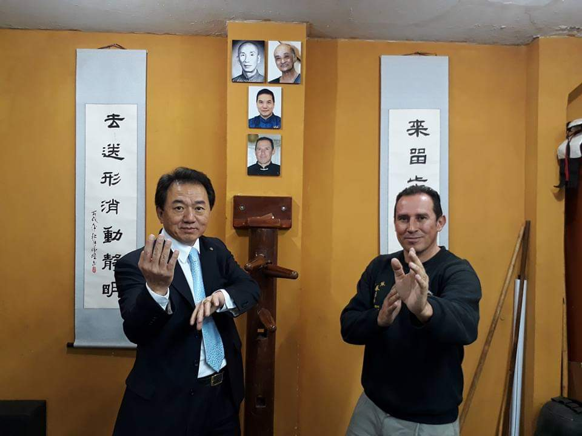

ACADEMIA DE ARTES MARCIALES CHINAS HUANG LONG
La Academia
La Academia de Artes Marciales Chinas Huang Long, ubicada en el Barrio Modelia en Bogotá,
fue
fundada el 1 de febrero de 1.997 por el Sifu Álvaro León Medina, quien es licenciado en
educación
física de la Universidad de Pamplona y Magister en educación de la Universidad del Tolima,
Cinturón
Negro 6° Duan (Dan). Es director técnico de la Liga Bogotana de Wushu y presidente de la
Comisión
técnica de la Federación Colombiana de Wushu. También es docente de Kung Fu y Tai chi en la
Fundación universitaria Juan N. Corpas.
Alumno directo de los Grandes Maestros: Chan Kam Fai 9° Dan, Maestro Jefe en el Hung Sing
Kwoon en
Foshan (Casa del fundador del estilo Choy Li Fat, rama de Fatsan) , Liu Hong Liang (QPD),
Maestro de
Tai Chi estilo Chen, línea de Shangai, y del Gran maestro Donald Mak, director de IWCO
(International Wing Chun Organization), uno de los más prestigiosos exponentes de Wing Chun
a nivel
mundial.

Nuestra academia tiene como propósito principal la trasmisión del Kung Fu, cuyo nombre
técnico es
Wushu en nuestro país, como una disciplina que contribuya en la formación de seres humanos
integrales.

Filosofía
Entender que la vida trasciende las dimensiones materiales e inmediatas de la
cotidianidad:
tener una carrera, un trabajo o una familia; y que es necesario cultivar y explorar el
propio
sentido de la existencia, para crecer en todas las dimensiones que la vida contempla.
Misión
Transmitir el Kung Fu (Wu Shu) como un camino que contribuya a la formación integral
(física,
mental, sicológica y espiritual), de cada uno de sus miembros, con el fin de aportarle a
la
sociedad mejores seres humanos.
Visión
Ser una institución con proyección en todos los campos de la educación Formal e
informal:
preescolar, primaria, secundaria, universitaria, institutos, y público en general; que
quieran
conocer la cultura China a través del Kung Fu, no solo en nuestro país, sino a nivel
internacional, con el fin de posicionarse como una de las instituciones referentes, en
lo que a
las artes marciales chinas se refiere.

Choy Li Fat
El Choy Li Fat es uno de los sistemas de Kung Fu más populares y eficaces en los estilos
tradicionales del sur de China.
Se compone de movimientos largos, circulares y continuos, junto a técnicas de mano y
pierna.
Emplea
una gran variedad de armas, lo que se traduce en un estilo muy completo en el mundo del
Kung Fu.

Wing Chung
El Wing Chung es un sistema que enfatiza en el combate a corta distancia. Sus
movimientos y
técnicas son directas. Este estilo de Kung Fu es muy famoso ya que Bruce Lee practicó
este
sistema.
Una de sus características es aprovechar la fuerza del oponente para aplicar las
técnicas, es
por ello que el Wing Chun puede ser practicado por todas las personas sin importar su
edad, peso
o altura.

Tai Chi
El Tai Chi es un estilo de Kung Fu originalmente utilizado para la defensa personal; sin
embargo, actualmente su enfoque es terapéutico para sanar enfermedades e igualmente, por
sus
movimientos lentos, relajados y con una respiración controlada; desarrolla armonía,
energía y
salud, es ideal para combatir el estrés.

Clases (pandemia)
Niños de 5 a 12 años:
Adultos:
Taichi:
- Jueves de 4:30pm a 5:45pm
- Domingos de 10:30am a 11:30am Clase al Aire Libre
Adultos:
- Jueves de 7:15pm a 9:15pm
- Domingos de 11:30am a 1:30pm Clase al Aire Libre
Taichi:
- Jueves de 6:15pm a 7:15pm
Sede Bogotá - Colombia
Carrera 74 No. 24-09 Primer Piso Barrio Modelia frente al CAI de Policía Avenida la
Esperanza.
Teléfono: 311 214 4150
Correo: choylifatleon@yahoo.es
Teléfono: 311 214 4150
Correo: choylifatleon@yahoo.es
Galería
Desliza para ver más



Toca la imagen para agrandar
Desliza para ver más
Clic para ver el video